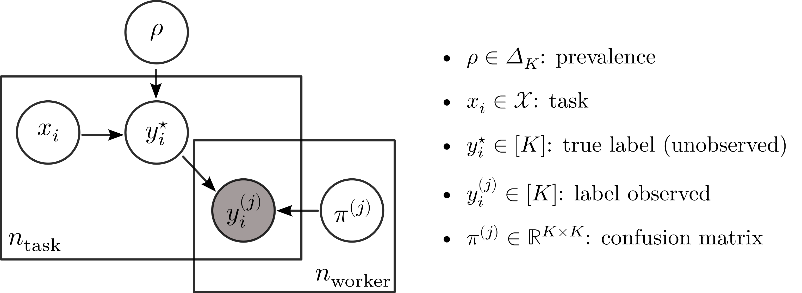

![]()
Hide/Show the code
! peerannot simulate --n-worker=30 --n-task=200 --n-classes=5 \
--strategy independent-confusion \
--feedback=10 --seed 0 \
--folder ./simus/independent ISSN 2824-7795
ISSN 2824-7795
Crowdsourcing is a quick and easy way to collect labels for large datasets, involving many workers. However, it is common for workers to disagree with each other. Sources of error can arise from the workers’ skills, but also from the intrinsic difficulty of the task. We introduce peerannot, a Python library for managing and learning from crowdsourced labels.
Crowdsourcing is a quick and easy way to collect labels for large datasets, involving many workers. However, workers often disagree with each other. Sources of error can arise from the workers’ skills, but also from the intrinsic difficulty of the task. We present peerannot: a Python library for managing and learning from crowdsourced labels. Our library allows users to aggregate labels from common noise models or train a deep learning-based classifier directly from crowdsourced labels. In addition, we provide an identification module to easily explore the task difficulty of datasets and worker capabilities.
Image datasets widely use crowdsourcing to collect labels, involving many workers that can annotate images for a small cost (or even free for instance in citizen science) and faster than using expert labeling. Many classical datasets considered in machine learning have been created with human intervention to create labels, such as CIFAR-10, (Krizhevsky and Hinton 2009), ImageNet (Deng et al. 2009) or (Garcin et al. 2021) in image classification, but also COCO (Lin et al. 2014), solar photovoltaic arrays (Kasmi et al. 2023) or even macro litter (Chagneux et al. 2023) in image segmentation and object counting.
Crowdsourced datasets induce at least three major challenges to which we contribute with peerannot:
identify uses different scoring metrics to create a worker and/or task evaluation. This is particularly relevant considering the gamification of crowdsourcing experiments (Servajean et al. 2016)aggregate command, that given multiple labels, infers a ground truth label. From aggregated labels, a classifier can then be trained using the train command.aggregate-deep command.The library peerannot addresses these practical questions within a reproducible setting. Indeed, the complexity of experiments often leads to a lack of transparency and reproducible results for simulations and real datasets. We propose standard simulation settings with explicit implementation parameters that can be shared. For real datasets, peerannot is compatible with standard neural networks architectures from the Torchvision (Marcel and Rodriguez 2010) library and Pytorch (Paszke et al. 2019), allowing a flexible framework with easy-to-share scripts to reproduce experiments.

peerannot library. An optional preprocessing step using the identify command allows us to remove worse performing workers or images that can not be classified correctly (very bad quality for example). Then, from the cleaned dataset, if we want labels we use the aggregate command that follows the chosen strategy. From the aggregated labels we can train a neural network classifier with the train command. Otherwise, we can directly train a neural network classifier that takes into account the crowdsourcing setting in its architecture using aggregate-deep.Let us consider the classical supervised learning classification framework. A training set \mathcal{D}=\{(x_i, y_i^\star)\}_{i=1}^{n_{\text{task}}} is composed of n_{\text{task}} tasks x_i\in\mathcal{X} (the feature space) with (unobserved) ground truth label y_i^\star \in [K]={1,\dots,K} one of the K possible classes. In the following, the tasks considered are generally RGB images. We use the notation \sigma for the softmax function. We use the i index notation to denote the tasks dimension and the j index notation for the workers in the crowdsourcing experiment. Note that indices start at position 1 in the equation to follow mathematical standard notation such as [K]=1,\dots,K but it should be addressed that, as this is a Python library, in the code indices start at the 0 position.
With crowdsourced data the ground truth of a task x_i, denoted y_i^\star is unknown, and there is no single label that can be trusted as in standard supervised learning (even on the train set!). Instead, there is a crowd of n_{\text{worker}} workers from which multiple workers (w_j)_j propose a label (y_i^{(j)})_j. The set of workers answering the task x_i is denoted by \mathcal{A}(x_i)=\{j\in[n_\text{worker}]: w_j \text{ answered }x_i\}. The cardinal \vert \mathcal{A}(x_i)\vert is called the feedback effort on the task x_i. Note that the feedback effort can not exceed the total number of workers n_{\text{worker}}. Similarly, one can adopt a worker point of view: the set of tasks answered by a worker w_j is denoted \mathcal{T}(w_j)=\{i\in[n_\text{task}]: w_j \text{ answered } x_i\}. The cardinal \vert \mathcal{T}(w_j)\vert is called the workerload of w_j. The final dataset can then be decomposed as: \mathcal{D}_{\text{train}} := \bigcup_{i\in[n_\text{task}]} \{(x_i, (y_i^{(j)}) \text{ for }j\in\mathcal{A}(x_i))\} = \bigcup_{j\in[n_\text{worker}]} \{(x_i, (y_i^{(j)})) \text{ for }i \in\mathcal{T}(w_j)\} \enspace.
In this article, we do not address the setting where workers report their self-confidence (Yasmin et al. 2022), nor settings where workers are presented a trapping set – i.e a subset of tasks where the ground truth is known to evaluate them with known labels (Khattak 2017).
peerannotCrowdsourced datasets come in various To store crowdsourcing datasets efficiently and in a standardized way, peerannot proposes the following structure, where each dataset equals a folder:
datasetname
├── train
│ ├── class1
│ │ ├─ imagename-<key>.png
│ │ ├─ ...
│ │ └─ anotherimagename-<anotherkey>.png
│ ├── ...
│ └── classK
├── val
├── test
├── metadata.json
└── answers.jsonThe answers.json file stores the different votes for each task as described in Figure 2. Thus, for example for an image named smiley_face-1, the associated labels are stored in the answers.json at the key numbered 1. This key identification system allows us to track directly from the filename the crowdsourced labels without having to rely on multiple indexing files as can be traditionally proposed. Furthermore, storing labels in a dictionary is more memory-friendly than having an array of size (n_task,n_worker) and writing -1 when the worker w_j did not see the task x_i and y_i^{(j)} otherwise (used in recent works such as Rodrigues et al. (2017)).

answers.json file for a binary classification (K=2) on recognizing smiling faces. (left: how data is stored in peerannot, right: data collected)In Figure 2, there are three tasks, n_{\text{worker}}=4 workers and K=2 classes. If the tasks (images) are available, they must be stored as it is usual to store ImageFolder datasets with pytorch into a train, val and test folder. Each image can have its name followed by its index in the answers.json file.
Finally, a metadata.json file includes relevant information related to the crowdsourcing experiment such as the number of workers, the number of tasks, etc. For example, a minimal metadata.json file for the toy dataset presented in Figure 2 is:
{
"name": "toy-data",
"n_classes": 2,
"n_workers": 4,
"n_tasks": 3
}The toy-data example dataset is available as example in the peerannot repository. Classical datasets in crowdsourcing such as CIFAR-10H and LabelMe can be installed directly using peerannot (an example is provided in Section 4.3)
The first question we address with peerannot is: How to aggregate multiple labels into a single label from crowdsourced tasks? The aggregation step can lead to two types of learnable labels \hat y_i\in\Delta_{K} (where \Delta_{K} is the simplex of dimension K-1 : \Delta_{K}=\{p \in [K]: \sum_{k=1}^K p_k = 1, p_k \geq 0 \} ) depending on the use case for each task x_i, i=1,\dots,n_{\text{task}}:
Learning from soft labels has been shown to improve learning performance and make the classifier learn the task ambiguity (Zhang et al. 2018; Peterson et al. 2019; Park and Caragea 2022). However, crowdsourcing is often used as a stepping stone to creating a new dataset and we usually expect a classification dataset to associate a task x_i to a single label and not a full probability distribution. In this case, we recommend in practice releasing the anonymous answered labels and the aggregation strategy used to reach a consensus on a single label. With peerannot, both soft and hard labels can be produced.
Note that when a strategy produces a soft label, a hard label can be induced by taking the mode, i.e., the class achieving the maximum probability.
We list below the most classical aggregation strategies used in crowdsourcing.
While the most intuitive way to create a label from multiple answers for any type of crowdsourced task would be to take the majority vote (MV), this strategy has many shortcomings (James 1998) – there is no noise model, no worker reliability estimated, no task difficulty involved and especially no way to remove poorly performing workers. This baseline aggregation can be expressed as:
\hat y_i^{\text{MV}} = \operatornamewithlimits{argmax}_{k\in[K]} \sum_{j\in\mathcal{A}(x_i)} 1_{\{y_i^{(j)}=k\}} \enspace.
One pitfall with the MV is that the label produced is hard, hence the ambiguity is discarded by construction. To remedy this, the Naive Soft (NS) labeling consists in using the empirical frequency distribution as the task label:
\hat y_i^{\text{NS}} = \bigg(\frac{1}{\vert\mathcal{A}(x_i)\vert}\sum_{j\in\mathcal{A}(x_i)} 1_{\{y_i^{(j)}=k\}} \bigg)_{j\in[K]} \enspace. With the NS label, we keep the ambiguity, but all workers and all tasks are put on the same level. In practice, it is known that each worker comes with their abilities, thus modeling this knowledge can produce better results.
Going further into the aggregation, researchers began creating a noise model to take into account the workers’ abilities in the aggregation. These types of models are most often EM-based and one of the most studied (Gao and Zhou 2013) and applied (Servajean et al. 2017; Rodrigues and Pereira 2018) is the Dawid and Skene’s (DS) model (Dawid and Skene 1979). Assuming the workers are answering tasks independently, this model boils down to model pairwise confusions between each possible class. Each worker w_j is assigned a confusion matrix \pi^{(j)}\in\mathbb{R}^{K\times K} such that \pi^{(j)}_{k,\ell} = \mathbb{P}(y_i^{(j)}=\ell\vert y_i^\star=k). The model assumes that the probability for a task x_i to have true label y_i^\star=k follows a multinomial distribution with probabilities \pi^{(j)}_{k,\bullet} for each worker. Each class has a prevalence \rho_k=\mathbb{P}(y_i^\star=k) to appear in the dataset. Using the independence between workers, we obtain the following likelihood to maximize (using the EM algorithm):
\displaystyle\prod_{i\in [n_{\texttt{task}}]}\prod_{k \in [K]}\bigg[\rho_k\prod_{j\in [n_{\texttt{worker}}]} \prod_{k\in [K]}\big(\pi^{(j)}_{k, k}\big)^{1_{\{y_i^{(j)}=k\}}} \bigg]^{T_{ik}},
with T_{i,k}=1_{\{y_i^{\star}=k \}}. The final aggregated soft label is \hat y_i^{\text{DS}} = T_{i,\cdot}.

Many variants of the DS model have been proposed in the literature, using Dirichlet priors on the confusion matrices (Passonneau and Carpenter 2014), using L clusters of workers (Imamura, Sato, and Sugiyama 2018) with 1\leq L\leq n_{\text{worker}} (DSWC) or even faster implementation that produces only hard labels (Sinha, Rao, and Balasubramanian 2018).
Finally, we present the GLAD model (Whitehill et al. 2009) that not only takes into account the worker’s ability, but also the task difficulty in the noise model. Denoting \alpha_j\in\mathbb{R} the worker ability (the higher the better) and \beta_i\in\mathbb{R}^+_\star the task’s difficulty (the higher the easier), the model noise is:
\mathbb{P}(y_i^{(j)}=y_i^\star\vert \alpha_j,\beta_i) = \frac{1}{1+\exp(-\alpha_j\beta_i)} \enspace. GLAD’s model also assumes that the errors are uniform across wrong labels, thus: \forall k \in [K],\ \mathbb{P}(y_i^{(j)}=k\vert y_i^\star\neq k,\alpha_j,\beta_i) = \frac{1}{K-1}\left(1-\frac{1}{1+\exp(-\alpha_j\beta_i)}\right)\enspace. The likelihood can then be optimized using an EM algorithm to recover the soft label \hat y_i^{\text{GLAD}}.

All of these aggregation strategies – and more – are available in the peerannot library from the peerannot.models module. Each model is a class object in its own Python file. It inherits from the CrowdModel template class and is defined with at least two methods:
run: includes the optimization procedure to obtain needed weights (e.g. the EM algorithm for the DS model),get_probas: returns the soft labels output for each task.One way to evaluate the label aggregation strategies is to measure their accuracy. This means that the underlying ground truth must be known – or at least for a representative subset. As the set of n_{\text{task}} can be seen as a training set for a future classifier, we denote this metric \operatornamewithlimits{AccTrain} on a dataset \mathcal{D} for a given aggregated label (\hat y_i)_i as:
\operatornamewithlimits{AccTrain}(\mathcal{D}) = \frac{1}{\vert \mathcal{D}\vert}\sum_{i=1}^{\vert\mathcal{D}\vert} 1_{\{y_i^\star=\operatornamewithlimits{argmax}_{k\in[K]}\hat y_i\}} \enspace.
In the following, we write \operatornamewithlimits{AccTrain} for \operatornamewithlimits{AccTrain}(\mathcal{D}_{\text{train}}) as we only consider the full training set so there is no ambiguity. While this metric is useful, in practice there are a few arguable issues:
We first consider classical simulation settings in the literature that can easily be created and reproduced using peerannot.
The independent mistakes consider that each worker w_j answers following a multinomial distribution with weights given at the row y_i^\star of their confusion matrix \pi^{(j)}\in\mathbb{R}^{K\times K}. Each confusion matrix is generated diagonally dominant. Answers are independent of one another as each matrix is generated independently and each worker answers independently of other workers. In this setting, the DS model is expected to perform the best with enough data as we are simulating data from its assumed noise model.
We simulate n_{\text{task}}=200 tasks and n_{\text{worker}}=30 workers with K=5 possible classes. Each task x_i receives \vert\mathcal{A}(x_i)\vert=10 labels.
! peerannot simulate --n-worker=30 --n-task=200 --n-classes=5 \
--strategy independent-confusion \
--feedback=10 --seed 0 \
--folder ./simus/independentfrom peerannot.helpers.helpers_visu import feedback_effort, working_load
import seaborn as sns
import matplotlib.pyplot as plt
from matplotlib.ticker import MaxNLocator
from pathlib import Path
import matplotlib.ticker as mtick
sns.set_style("whitegrid")
votes_path = Path.cwd() / "simus" / "independent" / "answers.json"
metadata_path = Path.cwd() / "simus" / "independent" / "metadata.json"
efforts = feedback_effort(votes_path)
workerload = working_load(votes_path, metadata_path)
feedback = feedback_effort(votes_path)
nbins = 17
fig, ax = plt.subplots(1, 2, figsize=(9, 4))
sns.histplot(workerload, stat="percent", bins=nbins, shrink=1, ax=ax[0])
ax[0].yaxis.set_major_formatter(mtick.PercentFormatter(decimals=0))
ax[0].set_xlabel(r"$\vert\mathcal{T}(w_j)\vert$")
sns.histplot(feedback, stat="percent", bins=nbins, shrink=1, ax=ax[1])
ax[1].yaxis.set_major_formatter(mtick.PercentFormatter(decimals=0))
ax[1].set_xlabel(r"$\vert\mathcal{A}(x_i)\vert$")
ax[1].xaxis.set_major_locator(plt.MaxNLocator(3))
ax[1].set_xlim(8, 12)
ax[1].xaxis.set_major_locator(MaxNLocator(integer=True))
for i in range(2):
ax[i].xaxis.set_major_locator(MaxNLocator(3))
ax[i].xaxis.label.set_size(15)
ax[i].yaxis.label.set_size(15)
ax[i].xaxis.set_tick_params(labelsize=13)
ax[i].yaxis.set_tick_params(labelsize=13)
ax[i].title.set_size(18)
plt.tight_layout()
plt.show()
With the obtained answers, we can look at the aforementioned aggregation strategies performance:
for strat in ["MV", "NaiveSoft", "DS", "GLAD", "DSWC[L=5]", "DSWC[L=10]"]:
! peerannot aggregate ./simus/independent/ -s {strat}import pandas as pd
import numpy as np
from IPython.display import display
simu_indep = Path.cwd() / 'simus' / "independent"
results = {"mv": [], "naivesoft": [], "glad": [], "ds": [], "dswc[l=5]": [], "dswc[l=10]": []}
for strategy in results.keys():
path_labels = simu_indep / "labels" / f"labels_independent-confusion_{strategy}.npy"
ground_truth = np.load(simu_indep / "ground_truth.npy")
labels = np.load(path_labels)
acc = (
np.mean(labels == ground_truth)
if labels.ndim == 1
else np.mean(
np.argmax(labels, axis=1)
== ground_truth
)
)
results[strategy].append(acc)
results = pd.DataFrame(results, index=['AccTrain'])
results.columns = map(str.upper, results.columns)
results = results.style.set_table_styles([dict(selector='th', props=[('text-align', 'center')])])
results.set_properties(**{'text-align': 'center'})
results = results.format(precision=3)
display(results)| MV | NAIVESOFT | GLAD | DS | DSWC[L=5] | DSWC[L=10] | |
|---|---|---|---|---|---|---|
| AccTrain | 0.760 | 0.760 | 0.775 | 0.890 | 0.775 | 0.770 |
As expected by the simulation framework, Table 1 fits the DS model, thus leading to better accuracy to retrieve the simulated labels for the DS model. The MV aggregation does not consider any worker-ability scoring or the task’s difficulty and performs the worse.
Note that peerannot can also simulate datasets with an imbalanced number of votes (i.e. |\mathcal{A}(x_i)|\in [\texttt{feedback}] chosen uniformly at random). For example:
! peerannot simulate --n-worker=30 --n-task=200 --n-classes=5 \
--strategy independent-confusion \
--imbalance-votes \
--feedback=10 --seed 0 \
--folder ./simus/independent-imbalanced/sns.set_style("whitegrid")
votes_path = Path.cwd() / "simus" / "independent-imbalanced" / "answers.json"
metadata_path = Path.cwd() / "simus" / "independent-imbalanced" / "metadata.json"
efforts = feedback_effort(votes_path)
workerload = working_load(votes_path, metadata_path)
feedback = feedback_effort(votes_path)
nbins = 17
fig, ax = plt.subplots(1, 2, figsize=(9, 4))
sns.histplot(workerload, stat="percent", bins=nbins, shrink=1, ax=ax[0])
ax[0].yaxis.set_major_formatter(mtick.PercentFormatter(decimals=0))
ax[0].set_xlabel(r"$\vert\mathcal{T}(w_j)\vert$")
sns.histplot(feedback, stat="percent", bins=nbins, shrink=1, ax=ax[1])
ax[1].yaxis.set_major_formatter(mtick.PercentFormatter(decimals=0))
ax[1].set_xlabel(r"$\vert\mathcal{A}(x_i)\vert$")
ax[1].xaxis.set_major_locator(plt.MaxNLocator(3))
ax[1].xaxis.set_major_locator(MaxNLocator(integer=True))
for i in range(2):
ax[i].xaxis.set_major_locator(MaxNLocator(3))
ax[i].xaxis.label.set_size(15)
ax[i].yaxis.label.set_size(15)
ax[i].xaxis.set_tick_params(labelsize=13)
ax[i].yaxis.set_tick_params(labelsize=13)
ax[i].title.set_size(18)
plt.tight_layout()
plt.show()
With the obtained answers, we can look at the aforementioned aggregation strategies performance:
for strat in ["MV", "NaiveSoft", "DS", "GLAD", "DSWC[L=5]", "DSWC[L=10]"]:
! peerannot aggregate ./simus/independent-imbalanced/ -s {strat}import pandas as pd
import numpy as np
from IPython.display import display
simu_indep = Path.cwd() / 'simus' / "independent-imbalanced"
results = {"mv": [], "naivesoft": [], "glad": [], "ds": [], "dswc[l=5]": [], "dswc[l=10]": []}
for strategy in results.keys():
path_labels = simu_indep / "labels" / f"labels_independent-confusion_{strategy}.npy"
ground_truth = np.load(simu_indep / "ground_truth.npy")
labels = np.load(path_labels)
acc = (
np.mean(labels == ground_truth)
if labels.ndim == 1
else np.mean(
np.argmax(labels, axis=1)
== ground_truth
)
)
results[strategy].append(acc)
results = pd.DataFrame(results, index=['AccTrain'])
results.columns = map(str.upper, results.columns)
results = results.style.set_table_styles([dict(selector='th', props=[('text-align', 'center')])])
results.set_properties(**{'text-align': 'center'})
results = results.format(precision=3)
display(results)| MV | NAIVESOFT | GLAD | DS | DSWC[L=5] | DSWC[L=10] | |
|---|---|---|---|---|---|---|
| AccTrain | 0.630 | 0.605 | 0.560 | 0.635 | 0.635 | 0.650 |
While more realistic, working with an imbalanced number of votes per task leads to disrupting orders of performance for most strategies. ### Simulated correlated mistakes
The correlated mistakes are also known as the student-teacher setting. Consider that the crowd of workers is divided into two categories: teachers and students such that n_{\text{teacher}} + n_{\text{student}}=n_{\text{worker}}. Each student is randomly assigned to one teacher at the beginning of the experiment. We generate the (diagonally dominant) confusion matrices of each teacher and the students are associated with their’s teacher confusion matrix. Then, they all answer independently, following a multinomial distribution with weights given at the row y_i^\star of their confusion matrix \pi^{(j)}\in\mathbb{R}^{K\times K}.
We simulate n_{\text{task}}=200 tasks and n_{\text{worker}}=30 with 80\% of students in the crowd. There are K=5 possible classes. Each task receives \vert\mathcal{A}(x_i)\vert=10 labels.
! peerannot simulate --n-worker=30 --n-task=200 --n-classes=5 \
--strategy student-teacher \
--ratio 0.8 \
--feedback=10 --seed 0 \
--folder ./simus/student_teachervotes_path = Path.cwd() / "simus" / "student_teacher" / "answers.json"
metadata_path = Path.cwd() / "simus" / "student_teacher" / "metadata.json"
efforts = feedback_effort(votes_path)
workerload = working_load(votes_path, metadata_path)
feedback = feedback_effort(votes_path)
nbins = 17
fig, ax = plt.subplots(1, 2, figsize=(9, 4))
sns.histplot(workerload, stat="percent", bins=nbins, shrink=1, ax=ax[0])
ax[0].yaxis.set_major_formatter(mtick.PercentFormatter(decimals=0))
ax[0].set_xlabel(r"$\vert\mathcal{T}(w_j)\vert$")
sns.histplot(feedback, stat="percent", bins=nbins, shrink=1, ax=ax[1])
ax[1].yaxis.set_major_formatter(mtick.PercentFormatter(decimals=0))
ax[1].set_xlabel(r"$\vert\mathcal{A}(x_i)\vert$")
ax[1].xaxis.set_major_locator(plt.MaxNLocator(3))
ax[1].set_xlim(8, 12)
ax[1].xaxis.set_major_locator(MaxNLocator(integer=True))
for i in range(2):
ax[i].xaxis.set_major_locator(MaxNLocator(3))
ax[i].xaxis.label.set_size(15)
ax[i].yaxis.label.set_size(15)
ax[i].xaxis.set_tick_params(labelsize=13)
ax[i].yaxis.set_tick_params(labelsize=13)
ax[i].title.set_size(18)
plt.tight_layout()
plt.show()
With the obtained answers, we can look at the aforementioned aggregation strategies performance:
for strat in ["MV", "NaiveSoft", "DS", "GLAD", "DSWC[L=5]", "DSWC[L=10]"]:
! peerannot aggregate ./simus/student_teacher/ -s {strat}simu_corr = Path.cwd() / 'simus' / "student_teacher"
results = {"mv": [], "naivesoft": [], "glad": [], "ds": [], "dswc[l=5]": [], "dswc[l=10]": []}
for strategy in results.keys():
path_labels = simu_corr / "labels" / f"labels_student-teacher_{strategy}.npy"
ground_truth = np.load(simu_corr / "ground_truth.npy")
labels = np.load(path_labels)
acc = (
np.mean(labels == ground_truth)
if labels.ndim == 1
else np.mean(
np.argmax(labels, axis=1)
== ground_truth
)
)
results[strategy].append(acc)
results = pd.DataFrame(results, index=['AccTrain'])
results.columns = map(str.upper, results.columns)
results = results.style.set_table_styles([dict(selector='th', props=[('text-align', 'center')])])
results.set_properties(**{'text-align': 'center'})
results = results.format(precision=3)
display(results)| MV | NAIVESOFT | GLAD | DS | DSWC[L=5] | DSWC[L=10] | |
|---|---|---|---|---|---|---|
| AccTrain | 0.680 | 0.690 | 0.645 | 0.755 | 0.795 | 0.815 |
With Table 3, we see that with correlated data (24 students and 6 teachers), using 5 confusion matrices with DSWC[L=5] outperforms the vanilla DS strategy that does not consider the correlations. And the best-performing method here estimates only 10 confusion matrices (instead of 30 for the vanilla DS model).
For the final simulation setting, we consider the discrete difficulty presented in Whitehill et al. (2009). Contrary to other simulations, we here consider that workers belong to two levels of abilities: or , and tasks have two levels of difficulty: or . The keyword ratio-diff indicates the prevalence of each level of difficulty, it is defined as the ratio of tasks over tasks:
\texttt{ratio-diff} = \frac{\mathbb{P}(\texttt{easy})}{\mathbb{P}(\texttt{hard})} \text{ with } \mathbb{P}(\texttt{easy}) +\mathbb{P}(\texttt{hard}) = 1 \enspace.
Difficulties are then drawn following at random. Tasks that are are answered correctly by every worker. Tasks that are are answered following the confusion matrix assigned to each worker. Each worker then answers independently to the presented tasks.
We simulate n_{\text{task}}=500 tasks and n_{\text{worker}}=100 with 35\% of good workers in the crowd and 50\% of easy tasks. There are K=5 possible classes. Each task receives \vert\mathcal{A}(x_i)\vert=10 labels.
! peerannot simulate --n-worker=100 --n-task=200 --n-classes=5 \
--strategy discrete-difficulty \
--ratio 0.35 --ratio-diff 1 \
--feedback 10 --seed 0 \
--folder ./simus/discrete_difficultyvotes_path = Path.cwd() / "simus" / "discrete_difficulty" / "answers.json"
metadata_path = Path.cwd() / "simus" / "discrete_difficulty" / "metadata.json"
efforts = feedback_effort(votes_path)
workerload = working_load(votes_path, metadata_path)
feedback = feedback_effort(votes_path)
nbins = 17
fig, ax = plt.subplots(1, 2, figsize=(9, 4))
sns.histplot(workerload, stat="percent", bins=nbins, shrink=1, ax=ax[0])
ax[0].yaxis.set_major_formatter(mtick.PercentFormatter(decimals=0))
ax[0].set_xlabel(r"$\vert\mathcal{T}(w_j)\vert$")
sns.histplot(feedback, stat="percent", bins=nbins, shrink=1, ax=ax[1])
ax[1].yaxis.set_major_formatter(mtick.PercentFormatter(decimals=0))
ax[1].set_xlabel(r"$\vert\mathcal{A}(x_i)\vert$")
ax[1].set_xlim(8, 12)
ax[1].xaxis.set_major_locator(MaxNLocator(integer=True))
for i in range(2):
ax[i].xaxis.set_major_locator(MaxNLocator(3))
ax[i].xaxis.label.set_size(15)
ax[i].yaxis.label.set_size(15)
ax[i].xaxis.set_tick_params(labelsize=13)
ax[i].yaxis.set_tick_params(labelsize=13)
ax[i].title.set_size(18)
plt.tight_layout()
plt.show()
With the obtained answers, we can look at the aforementioned aggregation strategies performance:
for strat in ["MV", "NaiveSoft", "DS", "GLAD", "DSWC[L=2]", "DSWC[L=5]"]:
! peerannot aggregate ./simus/discrete_difficulty/ -s {strat}simu_corr = Path.cwd() / 'simus' / "discrete_difficulty"
results = {"mv": [], "naivesoft": [], "glad": [], "ds": [], "dswc[l=2]": [], "dswc[l=5]": []}
for strategy in results.keys():
path_labels = simu_corr / "labels" / f"labels_discrete-difficulty_{strategy}.npy"
ground_truth = np.load(simu_corr / "ground_truth.npy")
labels = np.load(path_labels)
acc = (
np.mean(labels == ground_truth)
if labels.ndim == 1
else np.mean(
np.argmax(labels, axis=1)
== ground_truth
)
)
results[strategy].append(acc)
results = pd.DataFrame(results, index=['AccTrain'])
results.columns = map(str.upper, results.columns)
results = results.style.set_table_styles([dict(selector='th', props=[('text-align', 'center')])])
results.set_properties(**{'text-align': 'center'})
results = results.format(precision=3)
display(results)| MV | NAIVESOFT | GLAD | DS | DSWC[L=2] | DSWC[L=5] | |
|---|---|---|---|---|---|---|
| AccTrain | 0.805 | 0.790 | 0.845 | 0.810 | 0.600 | 0.660 |
Finally, in this setting involving task difficulty coefficients, the only strategy that involves a latent variable for the task difficulty, knowing GLAD, outperforms the other strategies (see Table 4). Note that in this case, creating clusters of answers leads to worse decisions than an MV aggregation.
To summarize our simulations, we see that depending on workers answering strategies, different latent variable models perform best. However, these are unknown outside of a simulation framework, thus if we want to obtain labels from multiple responses, we need to investigate multiple models. This can be done easily with peerannot as we demonstrated using the aggregate module. However, one might not want to generate a label, simply learn a classifier to predict labels on unseen data. This leads us to another module part of peerannot.
Most often, tasks are crowdsourced to create a large training set as modern machine learning models require more and more data. The aggregation step then simply becomes the first step in the complete learning pipeline. However, instead of aggregating labels, modern neural networks let us directly train a classifier from multiple noisy labels.
In recent years, directly learning a classifier from noisy labels was introduced. Two of the most used models: CrowdLayer (Rodrigues and Pereira 2018) and CoNAL (Chu, Ma, and Wang 2021), are directly available in peerannot. These two learning strategies directly incorporate a DS-based noise model in the neural network’s architecture.
CrowdLayer trains a classifier with noisy labels as follows. Let the scores (logits) output of a given classifier neural network \mathcal{C} be z_i=\mathcal{C}(x_i). Then CrowdLayer adds as a last layer \pi\in\mathbb{R}^{n_{\text{worker}}\times K\times K}, the tensor of all \pi^{(j)}s such that the crossentropy loss (\mathrm{CE}) is adapted to the crowdsourcing setting into \mathcal{L}_{CE}^{\text{CrowdLayer}} and computed as: \mathcal{L}_{CE}^{\text{CrowdLayer}}(x_i) = \sum_{j\in\mathcal{A}(x_i)} \mathrm{CE}(\sigma\left(\pi^{(j)}\sigma\big(z_i\big)\right), y_i^{(j)}) \enspace, where the classical crossentropy loss for two distribution u,v \in\Delta_{K} is defined as \mathrm{CE}(u, v) = \sum_{k\in[K]} u_k\log(v_k).
The confusion matrices are incorporated as is into the network architecture as a new layer to transform the output probabilities to match each worker’s answer. However, for some datasets, it was noticed that global confusion occurs between the proposed classes. It is the case for example in the LabelMe dataset (Rodrigues et al. 2017) where classes overlap. In this case, Chu, Ma, and Wang (2021) proposed to extend the CrowdLayer model by not only modeling the worker confusion matrices; but also a global confusion matrix \pi^g\in\mathbb{R}^{K\times K}.
Given the output z_i=\mathcal{C}(x_i)\in\mathbb{R}^K of a given classifier and task, CoNAL interpolates between the local confusion \pi^{(j)}z_i and the global one \pi^gz_i. The loss function is computed as follows: \begin{aligned} &\mathcal{L}_{CE}^{\text{CoNAL}}(x_i) = \sum_{j\in\mathcal{A}(x_i)} \mathrm{CE}(h_i^{(j)}, y_i^{(j)}) \enspace, \\ &\text{with } h_i^{(j)} = \sigma\left(\big(\omega_i^{(j)} \pi^g + (1-\omega_i^{(j)})\pi^{(j)}\big)z_i\right) \enspace. \end{aligned} \
The interpolation weight \omega_i^{(j)} is unobservable in practice. So, to compute h_i^{(j)}, the weight is obtained through an auxiliary network. This network takes in input the image and worker information and outputs a task-related vector v_i and a worker-related vector u_j of the same dimension. Finally, w_i^{(j)}=(1+\exp(- u_j^\top v_i))^{-1}.
Both CrowdLayer and CoNAL model worker confusions directly in the classifier’s weights to learn from the noisy collected labels and are available in peerannot as we will see in the following.
The \mathrm{AccTrain} metric presented in Section 3.2 might no longer be of interest when training a classifier. Classical error measurements involve a test dataset to estimate the generalization error. To do so, we present hereafter two error metrics. Assuming we trained our classifier f_\theta on a training set:
\mathrm{ECE} = \sum_{m=1}^M \frac{|B_m|}{n_{\text{task}}}|\mathrm{acc}(B_m) - \mathrm{conf}(B_m)|\enspace,
with B_m=\{x_i| \mathcal{C}(x_i)_{[1]}\in I_m\} the tasks with predicted probability in the m-th bin, \mathrm{acc}(B_m) the accuracy of the network for the samples in B_m and \mathrm{conf}(B_m) the associated empirical confidence.
The accuracy represents how well the classifier generalizes, the expected calibration error (ECE) quantifies the deviation between the accuracy and the confidence of the classifier. Modern neural networks are known to often be overconfident in their predictions (Guo et al. 2017). However, it has also been remarked that training on crowdsourced data, depending on the strategy, mitigates this confidence issue. That is why we propose to compare them both in our coming experiments. Note that the ECE error estimator is known to be biased (Gruber and Buettner 2022). Smaller training sets are known to have a higher ECE estimation error. And in the crowdsourcing setting, openly available datasets are often quite small.
peerannot on real datasetsFew real crowdsourcing experiments have been released publicly. Among the available ones, CIFAR-10H (Peterson et al. 2019) is one of the largest with 10 000 tasks labeled by workers (the testing set of CIFAR-10). The main limitation of CIFAR-10H is that there are few disagreements between workers and a simple majority voting already leads to a near-perfect \mathrm{AccTrain} error. Hence, comparing the impact of aggregation and end-to-end strategies might not be relevant (Peterson et al. 2019; Aitchison 2021), it is however a good benchmark for task difficulty identification and worker evaluation scoring
The LabelMe dataset was extracted from crowdsourcing segmentation experiments and a subset of K=8 classes was released in Rodrigues et al. (2017).
To install these datasets, we run the install command from peerannot:
! peerannot install ./datasets/labelme/labelme.py
! peerannot install ./datasets/cifar10H/cifar10h.pyLet us use peerannot to train a Resnet34 on the LabelMe dataset for:
As we can see, CoNAL strategy performs best. In this case, it is expected behavior as CoNAL was created for the LabelMe dataset. However, using peerannot we can look into why modeling common confusion returns better results with this dataset. To do so, we can explore the datasets from two points of view: worker-wise or task-wise.
If a dataset requires citizen knowledge to be labeled, it is because expert knowledge is long and costly to obtain. In the era of big data, where datasets are built using web scraping (or using a platform like Amazon Mechanical Turk), citizen science is popular as it is an easy way to produce many labels.
However, mistakes and confusions happen during these experiments. Sometimes involuntarily (e.g. because the task is too hard or the worker is unable to differentiate between two classes) and sometimes not (e.g. the worker is a spammer).
Underlying all the learning models and aggregation strategies, the cornerstone of crowdsourcing is evaluating the trust we put in each worker depending on the presented task. And with the gamification of crowdsourcing (Servajean et al. 2016; Tinati et al. 2017), it has become essential to find scoring metrics both for workers and tasks to keep citizens in the loop so to speak. This is the purpose of the identification module in peerannot
Our test cases are both the CIFAR-10H dataset and the LabelMe dataset to compare the worker and task evaluation depending on the number of votes collected. Indeed, the LabelMe dataset has only up to three votes per task whereas CIFAR-10H accounts for nearly fifty votes per task.
To explore the tasks’ intrinsic difficulty, we propose to compare three scoring metrics:
Note that each of these statistics is useful in its context. The entropy can not be used in a setting with small |\mathcal{A}(x_i)| (few labels per task), in particular for the LabelMe dataset it is uninformative. The WAUM can handle any number of labels, but the larger the better. However, as it uses a deep learning classifier, the WAUM needs the tasks (x_i)_i in addition to the proposed labels while the other strategies are feature-blind.
First, let us consider a dataset with a large number of tasks, annotations and workers: the CIFAR-10H dataset by Peterson et al. (2019).
import torch
import matplotlib.pyplot as plt
from PIL import Image
from pathlib import Path
nrow = 5
ncol = 5
fig, axs = plt.subplots(
nrow,
ncol,
sharey="row",
sharex="col",
figsize=(12,8)
)
match_ = {0: "bird", 1: "car", 2: "cat", 3: "deer", 4: "dog", 5: "frog", 6: "horse", 7: "plane", 8: "ship", 9: "truck"}
path = Path.cwd() / "datasets" / "cifar10H" / "train"
for i in range(nrow):
img_folder = path / f"{match_[i]}"
all_imgs = list(img_folder.glob("*"))[:ncol]
for j in range(ncol):
image = np.asarray(Image.open(path / all_imgs[j]))
axs[i,j].imshow(image, aspect="equal")
axs[i,j].axis("off")
axs[i,j].set_yticklabels([])
plt.subplots_adjust(left=0.05, bottom=0.05, right=0.95, top=0.95, wspace=0.05, hspace=0.05)
plt.show()
bird, car, cat, deerand dog (top to bottom) by row.! peerannot identify ./datasets/cifar10H -s entropy -K 10 --labels ./datasets/cifar10H/answers.json
! peerannot aggregate ./datasets/cifar10H/ -s GLADfrom scipy.stats import pearsonr
def corrfunc(x, y, ax=None, **kws):
r, _ = pearsonr(x, y)
ax = ax or plt.gca()
ax.annotate(rf'Corr. = {r:.2f}', xy=(.1, .9), xycoords=ax.transAxes)
results = {'GLAD difficulty': [], "Entropy": []}
path = Path.cwd() / "datasets" / "cifar10H" / "identification"
results["Entropy"] = np.load(path / 'entropies.npy')
results["GLAD difficulty"] = np.exp(np.load(path / "glad" / "difficulties.npy")[:, 1])
# results["waum"] = pd.read_csv(path / "resnet34" / "waum_0.01_yang" / 'waum.csv')["waum"].values
results = pd.DataFrame(results)
g = sns.pairplot(results, corner=True, diag_kind="kde", plot_kws={'alpha':0.2})
g.map_lower(corrfunc)
# axes = g.axes.flatten()
# for i, ax in enumerate(axes):
# if i % len(results) == 0:
plt.show()
As for the LabelMe dataset, one difficulty in evaluating tasks’ intrinsic difficulty is that there are up to three votes given per task. Hence, the entropy in the distribution of the votes is no longer a reliable metric, and we need to rely on other models.
import torch
import matplotlib.pyplot as plt
from PIL import Image
from pathlib import Path
nrow = 5
ncol = 5
fig, axs = plt.subplots(
nrow,
ncol,
sharey="row",
sharex="col",
figsize=(12,8)
)
match_ = {0: "coast", 1: "forest", 2: "highway", 3: "insidecity", 4: "mountain", 5: "opencountry", 6: "street", 7: "tallbuilding"}
path = Path.cwd() / "datasets" / "labelme" / "train"
for i in range(nrow):
img_folder = path / f"{match_[i]}"
all_imgs = list(img_folder.glob("*"))[:ncol]
for j in range(ncol):
image = np.asarray(Image.open(path / all_imgs[j]))
axs[i,j].imshow(image, aspect="equal")
axs[i,j].axis("off")
axs[i,j].set_yticklabels([])
plt.subplots_adjust(left=0.05, bottom=0.05, right=0.95, top=0.95, wspace=0.05, hspace=0.05)
plt.show()
coast, forest, highway, insidecityand mountain (top to bottom) by row.Now, let us compare the tasks’ difficulty distribution depending on the strategy considered using peerannot.
! peerannot identify ./datasets/labelme/ -s entropy -K 10 --labels ./datasets/labelme/answers.json
! peerannot aggregate ./datasets/labelme/ -s GLADWe can see in Figure 4 that because the number of labels given per task is in \{1,2,3\}, the entropy only takes four values and thus does not help to dissociate the tasks. In particular, tasks with only one label all have a null entropy, so not just consensual tasks.
from scipy.stats import pearsonr
def corrfunc(x, y, ax=None, **kws):
r, _ = pearsonr(x, y)
ax = ax or plt.gca()
ax.annotate(rf'Corr. = {r:.2f}', xy=(.1, .1), xycoords=ax.transAxes)
results = {'GLAD difficulty': [], "Entropy": []}
path = Path.cwd() / "datasets" / "labelme" / "identification"
results["Entropy"] = np.load(path / 'entropies.npy')
results["GLAD difficulty"] = np.exp(np.load(path / "glad" / "difficulties.npy")[:, 1])
results = pd.DataFrame(results)
g = sns.pairplot(results, corner=True, diag_kind="kde", plot_kws={'alpha':0.2})
g.map_lower(corrfunc)
plt.show()
From the labels, we can explore different worker evaluation scores. GLAD’s strategy estimates a reliability scalar coefficient \alpha_j per worker. With strategies looking to estimate confusion matrices, we investigate two scoring rules for workers:
When the tasks are available, confusion-matrix-based deep learning models can also be of use. We thus add to the comparison the trace of the confusion matrices with CrowdLayer and CoNAL on the datasets. For CoNAL, we only consider the trace of the confusion matrix \pi^{(j)} in the pairwise comparison, and provide the common confusion matrix \pi^g as separate.
The Cifar-10H dataset has few disagreements among workers. From ?@fig-abilities-cifar10H, we can see that in this dataset, different methods easily separate the worse workers from the rest of the crowd (workers in the tail of the distribution). However, these strategies disagree on the ranking of good against best workers as they do not measure the same properties.
! peerannot aggregate ./datasets/cifar10H/ -s GLAD
for method in ["trace_confusion", "spam_score"]:
! peerannot identify ./datasets/cifar10H/ --n-classes=10 \
-s {method} --labels ./datasets/cifar10H/answers.jsonpath_ = Path.cwd() / "datasets" / "cifar10H"
results_identif = {"trace_confusion": [], "spam_score": [], "glad": []}
results_identif["trace_confusion"].extend(np.load(path_ / 'identification' / "traces_confusion.npy"))
results_identif["spam_score"].extend(np.load(path_ / 'identification' / "spam_score.npy"))
results_identif["glad"].extend(np.load(path_ / 'identification' / "glad" / "abilities.npy")[:, 1])
results_identif = pd.DataFrame(results_identif)
g = sns.pairplot(results_identif, corner=True, diag_kind="kde", plot_kws={'alpha':0.2})
g.map_lower(corrfunc)
plt.show()
Finally, let us evaluate workers for the LabelMe dataset. Because of the lack of data,
! peerannot aggregate ./datasets/labelme/ -s GLAD
for method in ["trace_confusion", "spam_score"]:
! peerannot identify ./datasets/labelme/ --n-classes=10 \
-s {method} --labels ./datasets/labelme/answers.jsonpath_ = Path.cwd() / "datasets" / "labelme"
results_identif = {"trace_confusion": [], "spam_score": [], "glad": []}
results_identif["trace_confusion"].extend(np.load(path_ / 'identification' / "traces_confusion.npy"))
results_identif["spam_score"].extend(np.load(path_ / 'identification' / "spam_score.npy"))
results_identif["glad"].extend(np.load(path_ / 'identification' / "glad" / "abilities.npy")[:, 1])
results_identif = pd.DataFrame(results_identif)
g = sns.pairplot(results_identif, corner=True, diag_kind="kde", plot_kws={'alpha':0.2})
g.map_lower(corrfunc)
plt.show()We introduced peerannot, a library to handle crowdsourced datasets. This library enables both easy label aggregation and direct training strategies with classical state-of-the-art classifiers. The identification module of the library allows exploring the collected data from both the tasks and the workers’ point of view for better scorings and data cleaning procedures. Our library also comes with templated datasets to better share crowdsourced datasets and have strategies more uniform to test on.
We hope that this library helps reproducibility in the crowdsourcing community and also standardizes training from crowdsourced datasets. New strategies can easily be incorporated into the open-source code available on github. Finally, as peerannot is mostly directed to handle classification datasets, one of our future works would be to consider other peerannot modules to handle crowdsourcing for object detection, segmentation and even worker evaluation in other contexts like peer-grading.
@article{lefort2023,
author = {Lefort, Tanguy and Charlier, Benjamin and Joly, Alexis and
Salmon, Joseph},
publisher = {Société Française de Statistique},
title = {Peerannot: Learning from Crowdsourced Image Datasets with
{Python}},
journal = {Computo},
date = {2023-04-27},
url = {https://computo.sfds.asso.fr/template-computo-quarto},
doi = {xxxx},
issn = {2824-7795},
langid = {en},
abstract = {Crowdsourcing is a quick and easy way to collect labels
for large datasets, involving many workers. However, workers often
disagree with each other. Sources of error can arise from the
workers’ skills, but also from the intrinsic difficulty of the task.
We present `peerannot`: a `Python` library for managing and learning
from crowdsourced labels. Our library allows users to aggregate
labels from common noise models or train a deep learning-based
classifier directly from crowdsourced labels. In addition, we
provide an identification module to easily explore the task
difficulty of datasets and worker capabilities.}
}